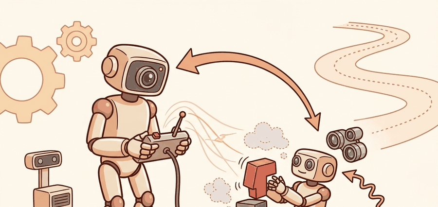

"Teleoperation is not a fallback. It is one of the fastest ways to reveal what the autonomy stack does not yet know how to do."
A Shared-Autonomy Design Review

Teleoperation for humanoids is a dual-purpose system. It keeps humans in the loop for safety and coverage, and it creates the demonstrations, failure traces, and interface contracts that later autonomy depends on.
A useful teleoperation latency budget is $T_{\mathrm{total}} = T_{\mathrm{sense}} + T_{\mathrm{encode}} + T_{\mathrm{network}} + T_{\mathrm{render}} + T_{\mathrm{human}} + T_{\mathrm{robot}}$. For high-bandwidth whole-body tasks, that sum shapes what can be directly operated and what must be handed to autonomous stabilizers or motion primitives.
Shared autonomy can be written as $u = \alpha u_{\mathrm{human}} + (1 - \alpha) u_{\mathrm{auto}}$, but the real system is richer. The human may command task intent while the robot closes local balance, collision, or grasp-stability loops. The best teleoperation interfaces expose this division clearly.
Poor teleoperation is often a systems-design failure, not an operator failure. The operator can only be as good as the latency, viewpoint, and autonomy partition allow.
Theory
Teleoperation is a productive first-class research layer because it solves three problems at once: it provides coverage for hard tasks, a direct debugging path for failed autonomy, and a data stream for imitation or behavior modeling.
Humanoid teleoperation is especially demanding because whole-body motion, balance, and manipulation are tightly coupled. A human operator may specify intent, but the local stabilizer still has to protect contact feasibility and safety zones.
Evaluation should therefore track not only task success but also operator workload, intervention frequency, takeover time, packet delay, and the fraction of control handled autonomously.
Real deployments illustrate how different teams draw the autonomy boundary. The 1X NEO system uses expert-mode supervision in which operators command high-level actions while the robot closes local balance and contact loops at full servo rate, keeping end-to-end human latency out of the stability-critical path. NVIDIA GR00T Whole-Body Control reports a similar split: the teleop interface sends Cartesian hand targets while an onboard whole-body controller solves for joint trajectories and footstep feasibility in real time. Stanford HumanPlus retargets full-body motion-capture pose to the robot at roughly 50 Hz, relying on the robot's built-in balance stabilizer to absorb pose tracking error rather than requiring the operator to command it explicitly.
- Measure end-to-end latency and packet jitter under realistic network conditions.
- Assign direct human control to the degrees of freedom that truly need it and delegate stabilization to the robot.
- Log the autonomy fraction, override events, and safety clamps.
- Save teleop traces in a dataset-ready format with operator intent, robot state, and video or scene context.
- Promote recurring operator corrections into future policy or controller improvements.
Worked Example
A small teleop run summary can reveal whether failure came from latency, viewpoint, or missing autonomy support rather than from human skill.
latency_ms = {"sense": 18, "network": 42, "render": 25, "human": 180, "robot": 14}
total = sum(latency_ms.values())
autonomy_fraction = 0.62
print({"total_latency_ms": total, "autonomy_fraction": autonomy_fraction})
print({"direct_teleop_ok_for_fast_balance": total < 120})Expected output interpretation. At 279 ms end-to-end latency, direct whole-body balance control is unrealistic. The operator can still command intent, but stabilization must be handled by local autonomy or motion primitives.
Use ROS 2 transport and logging, VR or motion-capture interfaces where appropriate, and dataset tooling that preserves intent, video, and synchronized robot state.
Practical Recipe
- Measure the real latency budget before choosing control granularity.
- Move fast stabilization to the robot side when latency exceeds the task envelope.
- Log operator intent and autonomous corrections separately.
- Turn teleoperation traces into dataset artifacts rather than disposable operator sessions.
- Review the top recurring interventions every week and convert them into automation candidates.
The partition should move more control to the robot side whenever end-to-end latency exceeds the mechanical time constant of the loop in question. Balance on a humanoid has a time constant on the order of 100-200 ms (the inverted-pendulum dynamics of a 1-metre centre-of-mass height); direct human balance control is therefore impossible above roughly 80-100 ms round-trip delay. Grasp stabilization tolerates slightly more latency because contact forces change more slowly than whole-body sway. High-level task sequencing (pick this box, move to that shelf) can tolerate 500 ms or more. In practice: push balance and collision avoidance to the robot at any network delay above 80 ms, push grasp stabilization at delays above 150 ms, and keep intent commands under human control at any latency the session allows.
A teleoperation system can look smooth in short videos while silently overloading the operator or depending on unlogged manual corrections.
For whole-body box carry, the operator may choose waypoint and hand intent while the robot handles foot placement and balance. For delicate insertion, autonomy may step back and the operator may take finer hand control.
Teleoperation teaches the autonomy stack where the robot still needs a grown-up in the room.
Current humanoid teleoperation is moving toward predictive interfaces, shared autonomy with strong local stabilizers, and better dataset extraction for training whole-body foundation models.
Which part of a humanoid task would you keep under local autonomy first when network delay rises: balance, collision avoidance, grasp stabilization, or high-level sequencing?
This section helps students see teleoperation as instrumentation rather than as failure. The best teams use teleop traces to discover control bottlenecks, perception blind spots, and policy interface mistakes.
It is also a useful bridge to data scaling. Teleoperation quality determines not only task success in the moment, but the quality of the demonstrations that later train autonomous policies.
| Tool or Library | Role in the Topic | Builder Advice |
|---|---|---|
| ROS 2 | Transport and synchronized logging | Record human intent and robot correction on the same timeline. |
| VR or motion-capture interfaces | Human input channel | Choose interfaces that match the required control granularity. |
| Dataset tooling | Turn teleop into training data | Never leave a useful teleop session as an unlabeled video only. |
This section supports teleoperation and data collection and humanoid foundation models.
Instrument one teleop task with a latency budget and autonomy split. Record where the operator helped and where autonomy already carried the load.
Teleop failures should be labeled by latency, viewpoint, operator overload, shared-autonomy mismatch, or low-level robot instability. Only one of those is fixed by training the operator harder.
Section References
LeRobot documentation. https://huggingface.co/docs/lerobot/en/index
Practical tooling for robot demonstration data.
1X NEO official page. https://www.1x.tech/neo
Current official example of expert-mode supervision in a humanoid stack.
GR00T Whole-Body Control documentation. https://nvlabs.github.io/GR00T-WholeBodyControl/
Current whole-body control reference relevant to local stabilizers in teleop stacks.
Humanoid teleoperation is valuable because it reveals where human intent ends and robot stabilization must begin.
Choose a humanoid task and define the autonomy partition you would use at 80 ms latency and at 300 ms latency. Explain which loops move to the robot side and why.